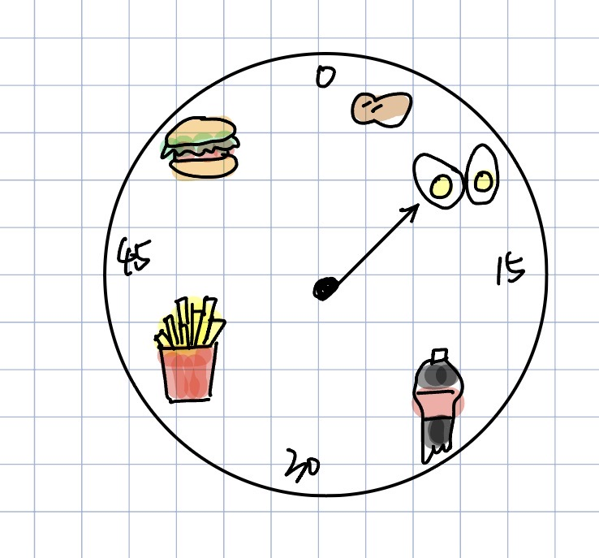
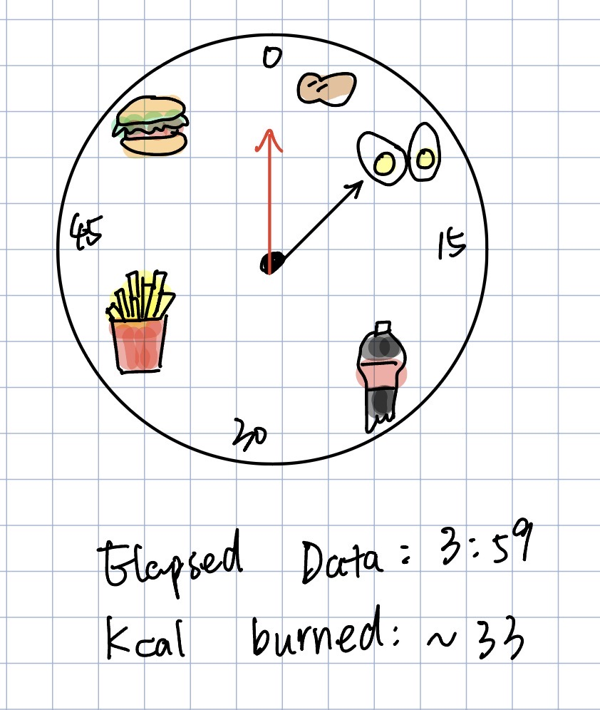

Final Clock 1
Sketch iteration documentation (paper/hand-drawn photos)


Design process:
- Food as time units: Each food is placed at its calorie-equivalent minute (~8 kcal/min). This turns abstract time into a motivational goal — you're running toward a cheeseburger, not just a number.
- One food at a time: Only the food the hand is currently pointing at shows in full color; the rest are grayed out. This uses pre-attentive processing — the active item pops out instantly with no effort.
- Three time layers: Minute hand, second hand, and a digital readout all show time at once. Each serves a different need — glancing, rhythm, precision.
- Iteration: Early drafts had food icons inside the ring, overlapping the tick marks. Moved them outside, switched to light background, simplified ticks to every 5 minutes.
Self-reflection / future work:
- The calorie rate (~8 kcal/min) is fixed. Ideally users could enter their weight and speed so food positions adjust to their actual burn rate.
- The gray effect uses a semi-transparent circle over the emoji — a workaround. Custom SVG icons would give true grayscale and look cleaner across browsers.